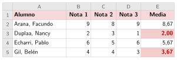
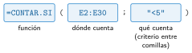

Formato condicional y funciones para contar
Criterios: 3b, 3f
🤔 Pienso10 min
Qué hago aquí: Piensa un momento y contesta con lo que ya sabes. No pasa nada si no lo sabes: es para empezar.
Tienes una lista de 120 alumnos con su nota. ¿Cómo harías para ver enseguida los suspensos? ¿Y para saber cuántos hay?
📖 Leo y aprendo40 min
Qué hago aquí: Lee despacio, mira los dibujos y los ejemplos, y quédate con la idea clave del final.
El formato condicional cambia el aspecto de una celda (relleno, color, negrita) solo si cumple una condición. Si el dato cambia, el formato cambia solo. Está en Inicio › Formato condicional.

mayor que, menor que, entre, duplicados
una barra según el valor
de verde (alto) a rojo (bajo)
flechas, semáforos, estrellas
Para cambiar o quitar reglas: Formato condicional › Administrar reglas.
Excel tiene varias funciones para contar celdas:
| Función | Qué cuenta | Ejemplo |
|---|---|---|
| CONTAR | Celdas con números. | |
| CONTARA | Celdas no vacías (números, textos…). | |
| CONTAR.BLANCO | Celdas vacías. | |
| CONTAR.SI | Celdas que cumplen un criterio. |

El criterio de CONTAR.SI puede ser un texto ("Madrid"), un número (8) o una comparación entre comillas (">=5", "<>0"). Con un asterisco cuentas los textos que empiezan igual: "h*" cuenta las palabras que empiezan por h.
✏️ Hago160 min
Qué hago aquí: Haz las actividades en orden. Empieza siempre por las básicas.
Las notas están en E2:E30. Escribe la función que cuenta…
- los aprobados:
- los alumnos que no tienen nota:
- los que han sacado un 10:
Calcula las ventas medias, máximas y mínimas de cada vendedor. Con formato condicional, resalta las ventas de más de 3500 €.
En la tabla de notas, calcula la media y pinta de rojo las menores que 5. Después añade a las ventas del trimestre un conjunto de iconos (flechas) y a otra columna, barras de datos.
Practica las funciones para contar con la tabla de la jirafa: cuenta las celdas con números, las que tienen datos, las vacías, los números menores que 10 y las palabras que empiezan por h.
En la lista del personal, cuenta cuántos empleados no tienen hijos, cuántos son del sector de marketing y cuántos cobran más de 1000 €.
Explica qué diferencia hay entre
y
si en A2:A20 hay 12 números, 5 textos y 2 celdas vacías. ¿Qué da cada una?
🚀 Amplío (si quieres saber más)
Qué hago aquí: ¿Has terminado? Lee la curiosidad o elige el reto. Es voluntario.
Investiga CONTAR.SI.CONJUNTO, que cuenta con varios criterios a la vez. Escribe la fórmula que cuenta los empleados de marketing que cobran más de 1000 €.
✅ Compruebo10 min
Qué hago aquí: Contesta sin mirar la ficha y marca cómo lo llevas.